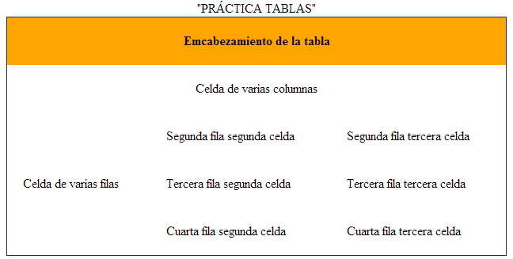
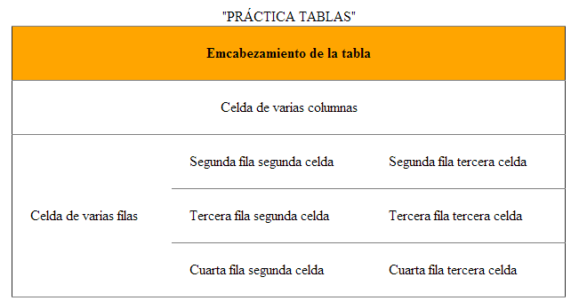
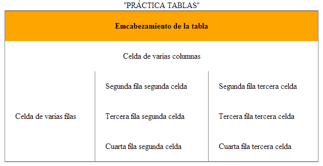
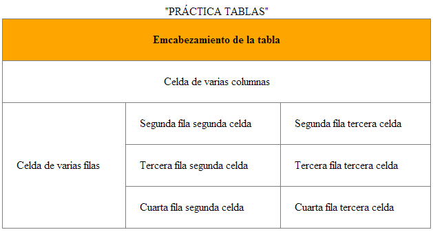

El lenguaje HTML es tan sencillo que prácticamente se entiende sin estudiar el significado de sus etiquetas principales.
Además de textos en negrita también se pueden poner en cursiva y subrayado.
HTML define 91 etiquetas que los diseñadores pueden utilizar para marcar los diferentes elementos que componen una pagina.
A pesar de que se trata de un número de etiquetas muy grande, no es suficiente para creer páginas complejas. Algunos elementos como las imágenes y los enlaces requieren cierta información adicional para estar completamente definidos
La etiqueta por ejemplo, se emplea para incluir un enlace en una págima. Utilizando sólo la etiqueta...
De esta forma, se utiliza la misma etiqueta para todos los enlaces de la página y se utilizan los atributos para indicar la dirección a la que apunta cada enlace.
HTML define 91 etiquetas que los diseñadores pueden utilizar para marcar los diferentes
elementos que componen una pagina.
A pesar de que se trata de un número de etiquetas muy grande, no es suficiente para creer páginas complejas. Algunos elementos como las imágenes y los enlaces requieren cierta información adicional para estar completamente definidos
La etiqueta por ejemplo, se emplea para incluir un enlace en una págima. Utilizando sólo la etiqueta...
De esta forma, se utiliza la misma etiqueta para todos los enlaces de la página y se utilizan los atributos para indicar la dirección a la que apunta cada enlace.
Las medidas se corresponden al recipiente de yogurt
| Cabecera |
| Menú |
| Contenidos |
| Pie de página |
CAPAS O CONTENEDORES HTML: Las capas o contenedores son unos recuadros o espacios rectangulares que pueden colocarse en cualquier parte de la página. En ellas, podemos insertar contenido HTML. Su utilidad principal es visual, permitiendo organizar y dar estructura y diseño a las páginas HTML.
ETIQUETA -DIV-. Podemos insertar una capa o contenedor a través de las etiquetas -div- y -/div-A través del atributo style se establecen las propiedades de estilo de la capa mediante el lenguaje CSS.
La etiqueta span sirve normalmente para crear subdivisiones dentro de una capa -div-. Esto nos permite aplicar estilos diferentes a cada subdivisión sin necesidad de crear nuevas capas. Imaginemos que en el ejemplo anteriormente mostrado, dentro de la cabecera cuya fuente es de color negro, quisiéramos añadir texto de distintos colores pero que ese texto perteneciera a la misma capa de la cabecera. Para ello, utilizaríamos la etiqueta span.
| Este es la cabezera | |
|---|---|
| A | B |
| C | D |
| Este es el pie | |
Definición y uso: El -thead- etiqueta se utiliza para agrupar contenido de la cabecera en una tabla HTML.
El -thead- elemento se utiliza en conjunción con los -tbody- y -tfoot- elementos para especificar cada parte de una tabla (cabecera, cuerpo, pie de página).
Los navegadores pueden utilizar estos elementos para permitir el desplazamiento del cuerpo de la tabla de forma independiente de la cabecera y pie de página. Además, al imprimir una gran tabla que abarca varias páginas, estos elementos pueden permitir a la cabecera de la tabla y el pie de página que se imprimirán en la parte superior e inferior de cada página.
El -thead- etiqueta debe ser utilizado en el siguiente contexto: Como hijo de un elemento -table-, después de cualquier -caption- y -colgroup- elementos, y antes de cualquier -tbody-, -tfoot- y -tr- elementos.
| Emcabezamiento de la tabla | ||
|---|---|---|
| Celda de varias columnas | ||
| Celda de varias filas | Segunda fila segunda celda | Segunda fila tercera celda |
| Tercera fila segunda celda | Tercera fila tercera celda | |
| Cuarta fila segunda celda | Cuarta fila tercera celda | |
Definición & Uso: El -thead- etiqueta se utiliza para agrupar contenido de la cabecera en una tabla HTML.
El -thead- elemento se utiliza en conjunción con los -tbody- y -tfoot- elementos para especificar cada parte de una tabla (cabecera, cuerpo, pie de página).
Los navegadores pueden utilizar estos elementos para permitir el desplazamiento del cuerpo de la tabla de forma independiente de la cabecera y pie de página. Además, al imprimir una gran tabla que abarca varias páginas, estos elementos pueden permitir a la cabecera de la tabla y el pie de página que se imprimirán en la parte superior e inferior de cada página.
El -thead- etiqueta debe ser utilizado en el siguiente contexto: Como hijo de un elemento -table-, después de cualquier -caption- y -colgroup- elementos, y antes de cualquier -tbody-, -tfoot- y -tr- elementos.
| Emcabezamiento de la tabla | ||
|---|---|---|
| Celda de varias columnas | ||
| Celda de varias filas | Segunda fila segunda celda | Segunda fila tercera celda |
| Tercera fila segunda celda | Tercera fila tercera celda | |
| Cuarta fila segunda celda | Cuarta fila tercera celda | |
| Emcabezamiento de la tabla | ||
|---|---|---|
| Celda de varias columnas | ||
| Celda de varias filas | Segunda fila segunda celda | Segunda fila tercera celda |
| Tercera fila segunda celda | Tercera fila tercera celda | |
| Cuarta fila segunda celda | Cuarta fila tercera celda | |
| Emcabezamiento de la tabla | ||
|---|---|---|
| Celda de varias columnas | ||
| Celda de varias filas | Segunda fila segunda celda | Segunda fila tercera celda |
| Tercera fila segunda celda | Tercera fila tercera celda | |
| Cuarta fila segunda celda | Cuarta fila tercera celda | |
| Emcabezamiento de la tabla | ||
|---|---|---|
| Celda de varias columnas | ||
| Celda de varias filas | Segunda fila segunda celda | Segunda fila tercera celda |
| Tercera fila segunda celda | Tercera fila tercera celda | |
| Cuarta fila segunda celda | Cuarta fila tercera celda | |
| “Tablas en HTML”. | |
|---|---|
| “Muestra comparativa del efecto de los distintos valores de rules sobre una tabla”. | |
| “VALOR ATRIBUTO” | “EJEMPLO” |
| rules="none" |  |
| rules="rows" |  |
| rules="cols"" |  |
| rules="all" |  |
| Francisco Javier Cervantes - DAW1 | |
-FIN-